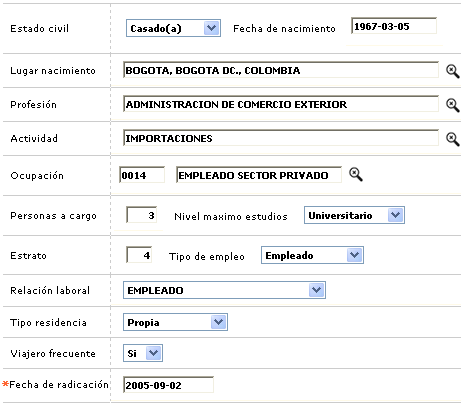

Novedad datos básicos persona natural
Este formulario invocado desde la consulta de clientes, permite corregir, modificar o completar la información básica referida a condiciones económicas y civiles, correspondientes a los clientes personas naturales. Al ingresar al formulario por defecto despliega los datos actuales registrados para el cliente con el fin de modificar únicamente aquellos datos que se requiera modificar o registrar los que no hayan sido ingresados inicialmente.

Descripción de campos
Estado civil |
Campo tipo combo en el cual se puede seleccionar entre Religioso(a), Divorciado(a), Viudo(a), Casado(a), Soltero(a) u Otro la opción correspondiente a la condición civil actual del cliente. |
Fecha de nacimiento |
Este campo permite ingresar en formato YYYY-MM-DD la fecha de nacimiento del cliente. |
Lugar de nacimiento |
Campo con lista de valores en el cual se selecciona la ubicación correspondiente a la ciudad de nacimiento del cliente. |
Profesión |
En este campo se selecciona de la lista de valores, la profesión reportada por el cliente. |
Actividad |
Campo que cuenta con lista de valores de la cual se puede seleccionar la actividad económica desarrollada por el cliente |
Ocupación |
En este campo que contiene lista de valores, se puede seleccionar la ocupación actual del cliente |
Personas a cargo |
Campo numérico de hasta 2 dígitos en el cual se registra la información respecto del número de personas que se dependen económicamente del cliente. |
Nivel máximo de estudios |
En este campo tipo combo, se puede seleccionar entre Primaria, Secundaria, Tecnológico, Universitario, Especialización, Maestría, Doctorado, Otras o Ninguna el nivel máximo de estudios alcanzado por el cliente. |
Estrato |
Campo alfanumérico de una posición en el cual se registra el nivel socio económico en el cual se encuentra ubicado el cliente. |
Tipo de empleo |
En este campo tipo combo, se puede seleccionar entre Independiente, Socio, Empleado, Jubilado, Socio empleado, Ama de casa u Otros la opción que permita establecer directa o indirectamente la fuente de ingresos del cliente. |
Relación laboral |
Campo que posee lista de valores de la que puede seleccionarse el tipo de relación laboral actual del cliente, información que puede ser utilizada por la entidad dentro del proceso de evaluación y también como base para la asignación del cupo de crédito. |
Tipo de residencia |
En este campo tipo combo, se puede seleccionar entre Familiar, Arrendada o Propia la condición de la vivienda en que habita el cliente, lo que permite tener una idea del balance financiero del mismo. |
Viajero frecuente |
Campo tipo combo con las opciones Si o No, y que permite indicar si el cliente es viajero frecuente, información de utilidad por ejemplo a la hora de definir la asignación de productos con esquema de puntos o millas o emitir plásticos adicionales tales como la tarjeta Premiun pass. |
Fecha de radicación |
Es el único campo obligatorio del formulario y en el se registra en formato YYYY-MM-DD la fecha en la cual el cliente notificó la actualización de sus datos básicos y que puede ser inclusive una fecha anterior a la actual del sistema, facilitando el ingreso de novedades de fechas anteriores. |